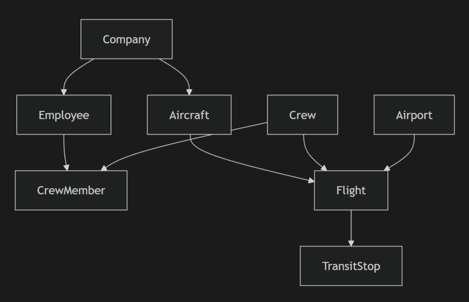

Отчет по лабораторной работе #3
Общая информация
- Проект: Система управления авиакомпанией
- Технологии: Django 4.x, Django REST Framework, Djoser, Django-filter
- База данных: SQLite (по умолчанию)
Установка и запуск
Требования
Django>=4.0
djangorestframework>=3.14
djoser>=2.1
django-filter>=23.0
django-cors-headers>=3.14
Запуск
python manage.py makemigrations
python manage.py migrate
python manage.py loaddata initial_data.json
python manage.py createsuperuser
python manage.py runserver
Архитектура проекта
Модели данных
airport_app/
├── models.py # Все модели данных
├── serializers.py # Сериализаторы DRF
├── views.py # ViewSets и Views
├── urls.py # Маршруты API
├── admin.py # Админ-панель Django
└── initial_data.json # Тестовые данные
Структура данных

Модели базы данных
Company (Компания)
name- Название компанииcode- Код компании (уникальный)
Aircraft (Самолет)
tail_number- Бортовой номер (уникальный)aircraft_type- Тип самолетаcapacity- Вместимостьspeed- Скорость полетаcompany- ForeignKey к Companystatus- Статус (active/repair)
Airport (Аэропорт)
code- Код аэропорта (уникальный)name- Названиеcity- Город
Employee (Сотрудник)
company- ForeignKey к Companyfirst_name,last_name- ФИОage- Возрастeducation- Образованиеexperience- Стаж работыpassport- Паспортные данныеposition- Должностьis_active- Активен ли сотрудник
Crew (Экипаж)
name- Название экипажаcompany- ForeignKey к Companyis_active- Активен ли экипажcreated_at- Дата создания
CrewMember (Член экипажа)
crew- ForeignKey к Crewemployee- ForeignKey к Employeeis_approved- Допуск к рейсу
Flight (Рейс)
flight_number- Номер рейсаdistance- Расстояниеdeparture_airport,arrival_airport- Аэропортыdeparture_datetime,arrival_datetime- Время вылета/прилетаaircraft- ForeignKey к Aircrafttickets_sold- Проданные билетыcrew- ForeignKey к Crew
TransitStop (Транзитная остановка)
flight- ForeignKey к Flightairport- ForeignKey к Airportarrival_datetime,departure_datetime- Время
API Endpoints
Аутентификация (Djoser)
| Метод | Endpoint | Описание |
|---|---|---|
| POST | /api/auth/users/ |
Регистрация пользователя |
| POST | /api/auth/token/login/ |
Получение токена |
| POST | /api/auth/token/logout/ |
Выход из системы |
| GET | /api/auth/users/me/ |
Информация о пользователе |
| GET | /api/current-user/ |
Альтернативная информация |
CRUD операции
| Ресурс | Endpoints |
|---|---|
| Companies | GET/POST /api/companies/, GET/PUT/DELETE /api/companies/{id}/ |
| Aircrafts | GET/POST /api/aircrafts/, GET/PUT/DELETE /api/aircrafts/{id}/ |
| Airports | GET/POST /api/airports/, GET/PUT/DELETE /api/airports/{id}/ |
| Employees | GET/POST /api/employees/, GET/PUT/DELETE /api/employees/{id}/ |
| Crews | GET/POST /api/crews/, GET/PUT/DELETE /api/crews/{id}/ |
| Flights | GET/POST /api/flights/, GET/PUT/DELETE /api/flights/{id}/ |
Требования
1. Популярная марка на маршруте
GET /api/flights/popular_aircraft_on_route/?departure=SVO&arrival=LED
Ответ:
{
"route": "SVO → LED",
"total_flights": 5,
"most_popular_aircraft": {
"aircraft_type": "Boeing 737-800",
"flights_count": 4,
"percentage": 80.0
}
}
2. Маршруты с низкой загрузкой
GET /api/flights/low_load_routes/?threshold=50
Ответ: Список маршрутов с загрузкой менее 50%
3. Свободные места на рейсе
GET /api/flights/{id}/available_seats/
Ответ:
{
"flight_id": 1,
"flight_number": "SU-1001",
"available_seats": 39,
"load_percentage": 79.4,
"has_available_seats": true
}
4. Самолеты в ремонте
GET /api/aircrafts/in_repair_count/
Ответ: {"in_repair_count": 1}
5. Количество работников компании
GET /api/employees/company_employees_count/?company_id=1
Ответ:
{
"company_id": 1,
"company_name": "Аэрофлот",
"total_employees": 5,
"active_employees": 5,
"inactive_employees": 0
}
6. Отчет о бортах компании
GET /api/aircrafts/company_aircrafts_report/?company_id=1
Ответ: Подробный отчет по типам самолетов с характеристиками
Фильтрация и поиск
Примеры фильтрации:
# Фильтрация самолетов
GET /api/aircrafts/?company=1&status=active&aircraft_type=Boeing
# Фильтрация сотрудников
GET /api/employees/?company=1&position=captain&is_active=true
# Поиск
GET /api/aircrafts/?search=737
# Сортировка
GET /api/flights/?ordering=departure_datetime
Поддерживаемые фильтры:
| Модель | Поля для фильтрации |
|---|---|
| Aircraft | company, status, aircraft_type |
| Employee | company, position, is_active |
| Flight | departure_airport, arrival_airport, aircraft, crew |
Админ-панель Django
Доступ:
- URL:
http://localhost:8000/admin/
Функции админки:
- Управление всеми моделями
- Поиск и фильтрация
- Inline-редактирование (экипажи, транзитные остановки)
- Цветная индикация загрузки рейсов
- Автодополнение ForeignKey полей
- Расчетные поля (статистика)
Особенности:
- Рейсы: Отображение загрузки с цветовой индикацией
- Сотрудники: Статус в экипаже
- Самолеты: Количество выполненных рейсов
- Аэропорты: Статистика вылетов/прилетов
Тестовые данные
Созданные объекты:
- 3 компании: Аэрофлот, S7 Airlines, Победа
- 5 самолетов: Boeing 737-800, Airbus A320, Boeing 777
- 4 аэропорта: Шереметьево, Домодедово, Пулково, JFK
- 6 сотрудников: Пилоты, штурманы, стюардессы
- 3 экипажа с разным составом
- 8 рейсов с различной загрузкой
- 1 транзитная остановка
Пользователи для тестирования:
| Логин | Пароль | Роль | Токен |
|---|---|---|---|
| admin | admin123 | Суперпользователь | - |
| testuser | testpass123 | Обычный пользователь | 9944b09199c62bcf9418ad846dd0e4bbdfc6ee4b |
Примеры использования
Сценарий 1: Поиск рейсов с низкой загрузкой
# 1. Авторизация
curl -X POST http://localhost:8000/api/auth/token/login/ \
-H "Content-Type: application/json" \
-d '{"username": "testuser", "password": "testpass123"}'
# 2. Получение токена (сохранить)
# 3. Поиск рейсов с загрузкой < 60%
curl -X GET "http://localhost:8000/api/flights/low_load_routes/?threshold=60" \
-H "Authorization: Token ваш_токен"
Сценарий 2: Работа с самолетами
# Получить все активные самолеты Аэрофлота
curl -X GET "http://localhost:8000/api/aircrafts/?company=1&status=active" \
-H "Authorization: Token ваш_токен"
# Получить отчет по самолетам компании
curl -X GET "http://localhost:8000/api/aircrafts/company_aircrafts_report/?company_id=1" \
-H "Authorization: Token ваш_токен"